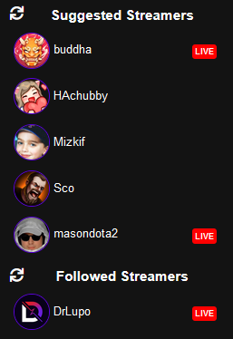

Most Requested Feature Deployed - Live Now on Twitch
Over the last few months, the most requested feature on KlipTok on the feedback site has been the addition of a "Live Now" indicator for the list of channels.
Original feedback requesting the Live Indicator
On Twitch, its a simple red circle.. the circle doesn't really tell you anything, and you need to hover over it in order to see what it actually means. On KlipTok, we want to be more inclusive and support folks that have different web usage capabilities.
Our 'Live Now' indicator is a red rounded square with the word 'LIVE' in the middle. It's easy to spot and clear what it's referring to. If you click on it, you'll be taken to their channel in a new tab of your browser.
You can even use the sidebar refresh buttons, the spinning arrows next to the titles in the sidebar, to refresh the list of current channels that KlipTok has for you and it will update the Live status appropriately as well.

Implementation of the Live Indicator on KlipTok
Behind the feature - How does it work?
As more of KlipTok is built, we're going to use this as an opportunity to TEACH more about how to build websites and the features behind them. Going forward, look for descriptions about the KlipTok architecture, but not all of our secrets, whenever a new feature is released.
Getting the Live Status from Twitch
The Twitch APIs make it easy to run a query to collect the current state of a stream. When KlipTok's background processes run to discover newly created clips, they inspect the list of currently active streams and ONLY search those streams for new clips. We know that more than 95% of the clips that are created for a stream are created while the broadcaster is actively streaming, so we focus on collecting those clips as they are created. Once an hour, we examine ALL channels that KlipTok has indexed.
Since we were collecting this data about the active streams in order to filter the list of channels that the KlipTok processes were searching against, why not save that information and present it to the KlipTok users as they use the site? Easy enough... we created a LiveChannels table and stored the id of the channels that are currently streaming.
I wrote a method on our LiveChannelsRepository class that would Replace the current contents of the table with the collection of the live channels we discovered. It's crude, but it works.
await _LiveChannelsRepository.Replace(
liveChannels.Select(l => new Twitch.TwitchStreamRecord
{
user_id = l.ChannelId,
started_at = l.LiveSince
})
);When we assemble the sidebar for a user, we include the LiveChannels table in the query and present the Live Indicator when a record is present in the LiveChannels table for the channel in the sidebar.
Summary
Adding this feature was a great re-use of existing data that KlipTok was already working with, and feels almost like re-using content with no additional cost to us. Stay tuned as we add new Search features, clip metadata, and launch the Top 5 Klips of the Week in August.
Welcome to KlipTok!
This is our first post on the KlipTok blog, and I'm thrilled to have this live for folks to learn more about how KlipTok is built and to allow us to announce new features as well as milestones reached. I'll have a few more posts today and later this week talking about what KlipTok is, how it was built, and how you can participate.
How it started
KlipTok has been built by a Twitch Streamer, for Twitch Streamers, LIVE on Twitch. It started in November 2020 as an idea to help make Twitch clips more discoverable with a UI that brought your favorite clips from the channels you follow. That 12-hour stream is archived and available:
The technical goal of this web application was to build a complete site using the Blazor web framework with C# and .NET 5 running completely on Microsoft Azure. We use Azure Static Websites to make that happen along with a number of other Microsoft Azure services, and we'll cover more of that in an upcoming blog post.
Fast Forward to Today
At the time of the writing of this blog post (at the end of July 2021), we're about 8 months into the evolution of the site and it hosts about 680 channels clips. There are more than 3.1 million clips that KlipTok has indexed and are available for you to discover.
We've added the ability for the site to be translated to a number of different languages with the help of our KlipTok community. The translations are all available in JSON format on GitHub and you are welcome to contribute new or missing translations.
Viewer and user feedback is VERY important to me in the construction of KlipTok, and I've configured a user feedback website using Fider. You can see the requested features and my notes about the next features that are going to be built at https://feedback.kliptok.com
I'm writing a handful of posts to get things started here to describe some of the direction behind the site, the tenets we follow as development progresses, and the Azure-based architecture used.
I hope to separate the Blazor application into its own repository and release the UI as an open source project before the end of July 2021. In this way, you can learn from how the application was written and even contribute back some updates to improve the user-interface.
One more thing...
I've added an amazing feature to KlipTok with the help of the folks at Assembly AI to provide transcription for clips. This means you can search for clips based on what was SAID in the clip, not just the title of the clip. This is the ONLY video sharing service on the internet that provides this service, and we have much more planned with our friends at Assembly AI.
Summary
So.. welcome to KlipTok! I'm looking forward to building much more for this web application and learning about how to use many more cloud services and taking advantage of the coolest new .NET technologies to grow it and make it an application you find useful.